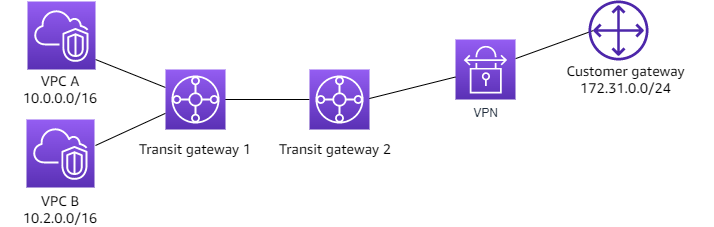

You can configure your transit gateway as a centralized router that connects all of your VPCs, AWS Direct Connect, and Site-to-Site VPN connections. In this scenario, all attachments are associated with the transit gateway default route table and propagate to the transit gateway default route table. Therefore, all attachments can route packets to each other, with the transit gateway serving as a simple layer 3 IP router.
Pattern Overview
Centralized Router Pattern:
Functions as a simple layer 3 IP router
Connects all network types:
VPCs
AWS Direct Connect
Site-to-Site VPN connections
Routing Configuration:
All attachments associate with default route table
5. VPC-B route table matches local route → delivers to destination EC2
6. Return traffic follows same process in reverse
Key Design Considerations
Routing:
All VPCs see all other VPC routes
On-premises sees all VPC routes
VPCs see on-premises routes
No route filtering or isolation
Security:
Security groups and NACLs still apply
Consider VPC security boundaries
Monitor cross-VPC traffic
Scaling:
Route table limits per TGW
Routes per route table limits
Attachment limits
Exam Tips
Remember:
Full mesh connectivity by default
Single route table for all attachments
Route propagation enabled for all attachments
VPCs need only default route to TGW
Common Questions:
Route propagation behavior
Traffic flow patterns
Route table configurations
Connectivity between different network types
Transit Gateway Pattern: Isolated VPCs
You can configure your transit gateway as multiple isolated routers. This is similar to using multiple transit gateways, but provides more flexibility in cases where the routes and attachments might change. In this scenario, each isolated router has a single route table. All attachments associated with an isolated router propagate and associate with its route table. Attachments associated with one isolated router can route packets to each other, but cannot route packets to or receive packets from the attachments for another isolated router.
Pattern Summary
Isolated VPCs Pattern:
Creates network isolation between VPCs
Each VPC can connect only to on-premises network
No VPC-to-VPC communication allowed
Uses multiple route tables to enforce isolation
Common in regulated environments or multi-tenant architectures
Architecture Components
Transit Gateway Configuration:
Multiple route tables (one per VPC plus one for VPN)
Destination Target Type
172.16.0.0/16 VPN-Attachment propagated
VPC-B Route Table:
Destination Target Type
172.16.0.0/16 VPN-Attachment propagated
VPC Route Tables:
VPC-A (10.1.0.0/16):
Destination Target
10.1.0.0/16 local
0.0.0.0/0 tgw-id
VPC-B (10.2.0.0/16):
Destination Target
10.2.0.0/16 local
0.0.0.0/0 tgw-id
On-premises Router BGP Table:
Example entries:
Network Next Hop AS Path
10.1.0.0/16 VPN-Tunnel-1-IP AWS-ASN
10.2.0.0/16 VPN-Tunnel-1-IP AWS-ASN
10.3.0.0/16 VPN-Tunnel-1-IP AWS-ASN
Traffic Flow Examples
Scenario 1: On-premises to VPC-A
1. On-premises (172.16.1.10) sends packet to VPC-A (10.1.1.10)
2. Packet arrives at TGW through VPN attachment
3. VPN route table matches 10.1.0.0/16 → forwards to VPC-A
4. VPC-A receives packet through TGW ENI
Scenario 2: VPC-A to VPC-B (Blocked)
1. VPC-A (10.1.1.10) sends packet to VPC-B (10.2.1.10)
2. Packet arrives at TGW
3. VPC-A route table has no route to 10.2.0.0/16
4. Packet is dropped
Key Design Considerations
Route Table Design:
Each VPC needs its own TGW route table
VPN attachment needs separate route table
Careful route propagation configuration required
No transitive routing between VPCs
Security:
Network isolation through route tables
Additional security through NACLs and security groups
Clear traffic boundaries
Scaling Considerations:
One route table per VPC
Route propagation management complexity
Association/propagation limits
Exam Tips
Remember:
Multiple route tables required
Selective route propagation
No VPC-to-VPC communication
Only on-premises connectivity allowed
Common Scenarios:
Multi-tenant environments
Regulatory compliance requirements
Security isolation needs
Route table configuration verification
Transit Gateway Pattern: Isolated VPCs with Shared Services
You can configure your transit gateway as multiple isolated routers that use a shared service. This is similar to using multiple transit gateways, but provides more flexibility in cases where the routes and attachments might change. In this scenario, each isolated router has a single route table. All attachments associated with an isolated router propagate and associate with its route table. Attachments associated with one isolated router can route packets to each other, but cannot route packets to or receive packets from the attachments for another isolated router. Attachments can route packets to or receive packets from the shared services. You can use this scenario when you have groups that need to be isolated, but use a shared service, for example a production system.
Pattern Summary
Isolated VPCs with Shared Services Pattern:
Maintains isolation between VPCs
Allows access to common shared services VPC
Enables on-premises network connectivity
Uses multiple route tables with selective routing
Common in enterprise environments with centralized services (DNS, Active Directory, security services)
1. On-premises (172.16.1.10) sends to Shared Services (10.0.1.10)
2. VPN attachment routes through TGW
3. VPN route table matches Shared Services CIDR
4. Traffic reaches Shared Services VPC
Key Design Considerations
Route Table Strategy:
Careful route propagation planning
Shared Services VPC needs routes to all VPCs
Isolated VPCs only get Shared Services routes
On-premises gets routes to all VPCs
Security Considerations:
Security groups in Shared Services VPC
Network ACLs for additional control
Consider service endpoints in Shared Services VPC
Monitor access patterns
Scaling Aspects:
Route table limits per TGW
Route propagation management complexity
Shared Services VPC capacity planning
Consider regional services distribution
Exam Tips
Key Points:
Multiple route tables with specific propagation
Shared Services VPC accessible by all
VPCs remain isolated from each other
On-premises access to all VPCs
Common Scenarios:
Enterprise shared services deployment
Centralized security services
DNS and Directory Services
Compliance with isolation requirements
Route Table Focus:
Understand propagation patterns
Know which routes each VPC needs
Recognize traffic flow patterns
Identify blocked vs allowed paths
Transit Gateway Pattern: Peered Transit Gateways
You can create a transit gateway peering connection between transit gateways and route traffic between their attachments. This enables communication between VPCs and on-premises networks across regions through transit gateway peering. Each transit gateway maintains its own route tables, and static routes are used to direct traffic through the peering connection.
Pattern Summary
Use Case:
Cross-region VPC connectivity
Shared VPN access across regions
Regional network isolation with controlled inter-region access

Figure: TGW Peering
Route Tables
VPC Route Tables:
VPC A (10.0.0.0/16):
Destination Target
10.0.0.0/16 local
0.0.0.0/0 tgw-1-id
VPC B (10.2.0.0/16):
Destination Target
10.2.0.0/16 local
0.0.0.0/0 tgw-1-id
Transit Gateway 1 Route Table:
Destination Target Route Type
10.0.0.0/16 Attachment ID for VPC A propagated
10.2.0.0/16 Attachment ID for VPC B propagated
0.0.0.0/0 Attachment ID for TGW peering static
Transit Gateway 2 Route Table:
Destination Target Route Type
172.31.0.0/24 Attachment ID for VPN propagated
10.0.0.0/16 Attachment ID for TGW peering static
10.2.0.0/16 Attachment ID for TGW peering static
Customer Gateway BGP Table:
Network Next Hop Path
10.0.0.0/16 TGW-2 VPN Interface ASN TGW-2, ASN TGW-1
10.2.0.0/16 TGW-2 VPN Interface ASN TGW-2, ASN TGW-1
172.31.0.0/24 Local Local
Traffic Flow Examples
Scenario: VPC A to Internet via VPN
1. Instance in VPC A (10.0.1.10) sends traffic to internet (8.8.8.8)
2. VPC A route table sends to TGW-1 (0.0.0.0/0 → tgw-1-id)
3. TGW-1 route table matches 0.0.0.0/0 → forwards to TGW-2 via peering
4. TGW-2 route table forwards to VPN attachment
5. Traffic reaches customer gateway and exits to internet
Scenario: VPC A to VPC B
1. Instance in VPC A (10.0.1.10) sends to VPC B (10.2.1.10)
2. VPC A route table sends to TGW-1 (0.0.0.0/0 → tgw-1-id)
3. TGW-1 route table matches 10.2.0.0/16 → forwards directly to VPC B attachment
4. Traffic reaches VPC B via local route
Key Limitations
Cannot peer transit gateways in same region
No transitive routing through peering connection
Maximum 50 peering attachments per transit gateway
Static routes required for peering (no automatic propagation)
CIDR ranges cannot overlap between peered networks
Exam Tips
Remember:
Each TGW maintains separate route tables
Static routes needed for peering communication
BGP routes propagate to customer gateway
Cross-region traffic flows through peering attachment